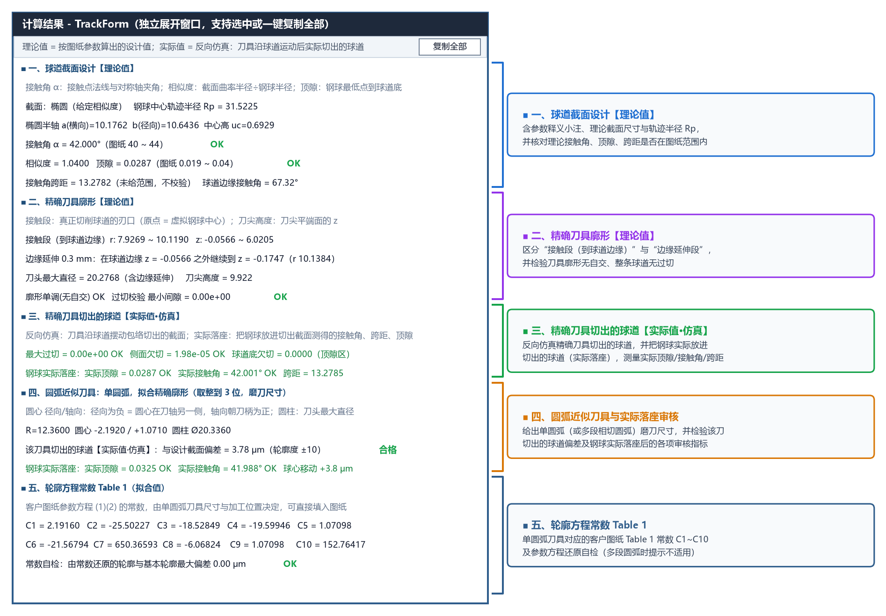

第四章：计算结果面板全面解读
每次点击 ▶ 计 算 (F5) 后，左侧面板下方的 计算结果 区域会自动输出完整的工程计算与校核结论。通过该面板，您可以一眼确认求出的球道截面参数、精确刀具尺寸范围、四项加工安全校核是否全部通过（绿色 OK），以及单圆弧近似刀具尺寸与客户图纸常数（C1 ~ C10）。
计算结果面板操作与独立窗口展开

弹出独立宽窗口与一键复制（三种方式）
由于左侧栏宽度紧凑，您可以通过以下任一方式在独立的宽窗口中查看完整结果（独立窗口开启后，每次重新计算都会自动同步刷新）：
- 点击
计算结果标题栏右侧的⤢ 展开按钮； - 直接在
计算结果文本框内双击鼠标左键； - 点击顶部菜单栏
视图(V) → 展开计算结果窗口。
在展开的 计算结果 - TrackForm 窗口右上角，点击 复制全部 按钮即可将全部文字一键复制到剪贴板，也可直接用鼠标拖选部分文字按 Ctrl+C 复制。
计算结果面板的五大信息分区
对照上图的编号批注，结果面板从上到下分为 5 个部分：
| 分区编号 | 分区名称 | 核心显示内容 | 对应详细教程 |
|---|---|---|---|
| ① | 球道截面几何参数 | 截面类型与定义方式、轨迹半径 、求出的椭圆半轴/圆弧半径/点表尺寸、实际相似度、顶隙及球道边缘接触角 | 4.1 精确廓形与加工安全校验指标 |
| ② | 精确成型刀尺寸范围 | 切削接触段半径范围 接触段 r、轴向范围 接触段 z（其最大值为刀尖高度的安全下限）、刀头最大直径 |
4.1 精确廓形与加工安全校验指标 |
| ③ | 四项加工安全性校核 | 廓形单调(无自交)、过切校验 最小间隙、仿真最大过切、仿真接触区欠切 及 球道底欠切 提示 |
4.1 精确廓形与加工安全校验指标 |
| ④ | 单圆弧近似刀具与合格判定 | 单圆弧半径 R、圆心径向/轴向坐标、圆柱段直径 Ø、生成球道偏差（合格/超差）与 生成球道顶隙 |
4.2 单圆弧近似与轮廓方程常数 (Table 1) |
| ⑤ | 轮廓方程常数 Table 1 | 客户产品图纸 Table 1 所需的 10 个常数 C1 ~ C10 以及 常数自检 结果 |
4.2 单圆弧近似与轮廓方程常数 (Table 1) |
颜色标记说明
- 绿色
OK/合格：表示该项几何指标或安全校验完全符合要求； - 红色报警文字（如
超出范围!、超差!、过切!等）：表示当前参数存在刀尖截断切削刃、顶隙超限、钢球未贴合或单圆弧超差等问题，导出文件前软件也会弹窗拦截提醒。